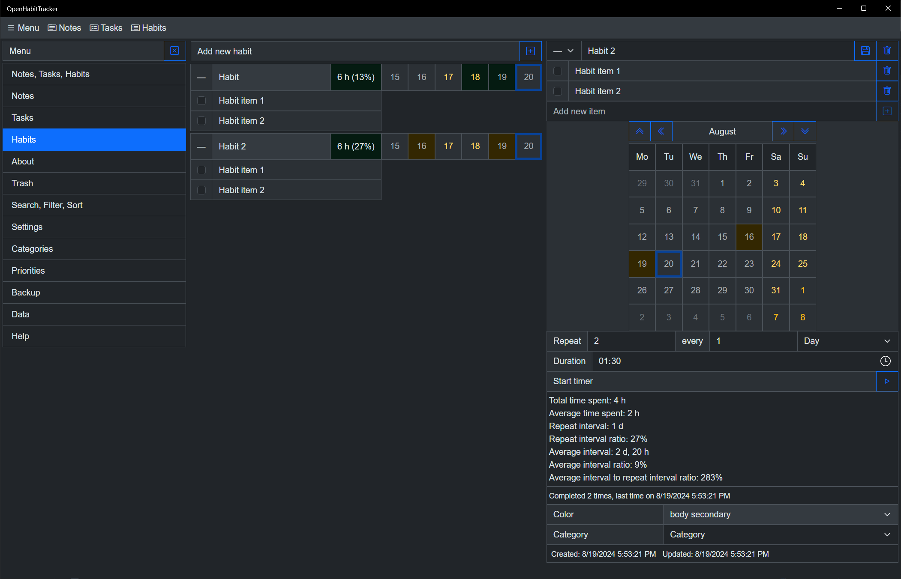
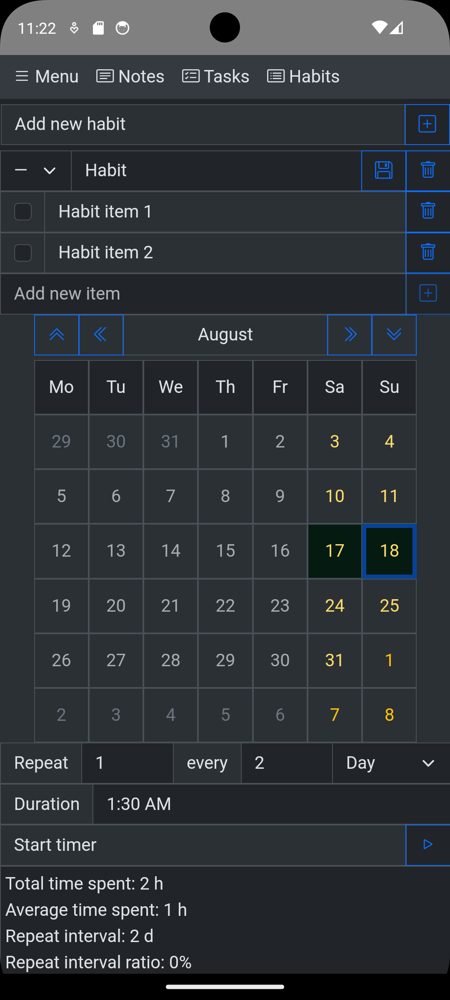
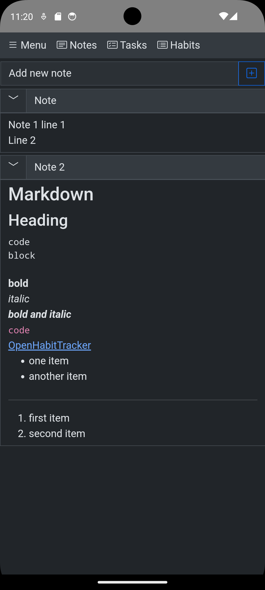
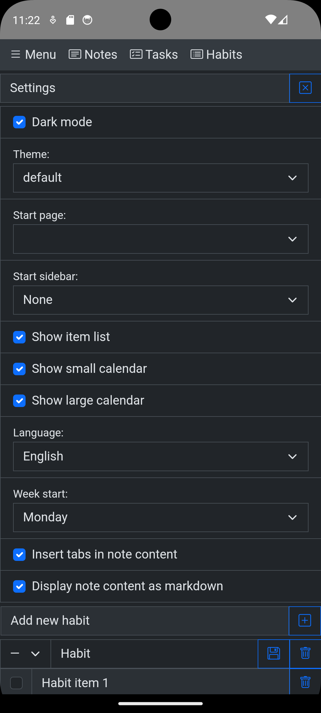

An Everyday alternative with unlimited free habits
Keep the simple calendar, lose the 3-habit limit
Everyday nails the "don't break the chain" idea: a clean calendar grid of colored squares, visible on mobile, on the web and on macOS. It is friendly, visual and very easy to start with. The catch comes at habit number four: the free tier stops at 3 habits, and beyond that it costs about $30/year (or a ~$100 lifetime purchase), with an account required and your data in their cloud.
Three habits is enough to try a habit tracker - it is rarely enough to use one.
OpenHabitTracker is a free, open source alternative with no habit limit, no account and no subscription - your data stays on your device.
Everyday vs OpenHabitTracker
| Everyday | OpenHabitTracker | |
|---|---|---|
| Price | 3 habits free; ~$30/year or ~$100 lifetime | free, unlimited |
| Habit limit | 3 on the free tier | none |
| Open source | ❌ | ✅ GPL-3.0 |
| Account required | ✅ | ❌ no |
| Where your data lives | their cloud | on your device |
| Android / iOS | ✅ | ✅ |
| macOS | ✅ | ✅ |
| Windows / Linux | 🌐 browser only | ✅ native apps |
| Web | ✅ | ✅ PWA, works offline |
| Streak model | ✅ don't break the chain | elapsed time vs desired interval; streaks opt-in |
| Notification reminders | ✅ | ❌ overdue habits are highlighted instead |
| Notes / tasks | ❌ | ✅ Markdown notes + tasks |
| Sync | ✅ their cloud | ✅ optional self-hosted server (Docker) |
| Languages | ~10 | 20 |
| Themes | limited | 26, dark and light |
Credit where due: Everyday's calendar grid is one of the best-looking "chain" visualizations around, onboarding takes seconds, and having the same view in the browser and on your phone is convenient. If you track three habits or fewer and like the aesthetic, the free tier may be all you need.
Chains break - intervals bend
Everyday is built on the Seinfeld method: do the thing daily, keep the chain alive. OpenHabitTracker takes a more forgiving approach - each habit has its own desired interval (daily, every 4 days, weekly...), and the app shows how overdue each habit is as a percentage of that interval. A 4-day habit that is 2 days overdue sits at 150% and its badge shifts toward the overdue color (green, amber and red in the default theme). One missed day never breaks anything - the percentage just grows until you get to it.
Classic streaks are available too - opt-in, off by default, added because a user asked on GitHub.
Screenshots
Desktop:
{kind=link}

As many habits as you want - free
Phone:
{kind=link}

Habit calendar on a phone
{kind=link}

Notes and tasks included - not just habits
{kind=link}

Settings - themes, languages, customization
The honest verdict
- Stay with Everyday if you track 3 habits or fewer, love the chain grid, and don't mind an account.
- Try OpenHabitTracker if you want unlimited habits for free, your data on your own device, native desktop apps, and notes and tasks in the same place.
Try it for free
Use OpenHabitTracker in your browser
No install needed - the PWA keeps all data on your device. Or get the native app:
Android - Google Play:
iOS - App Store:
Windows - Microsoft Store:
macOS - Mac App Store:
Questions? The source is on GitHub and the community is on Reddit.